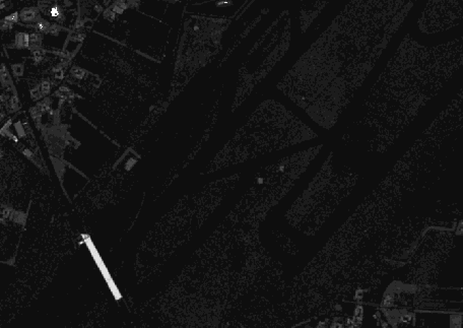
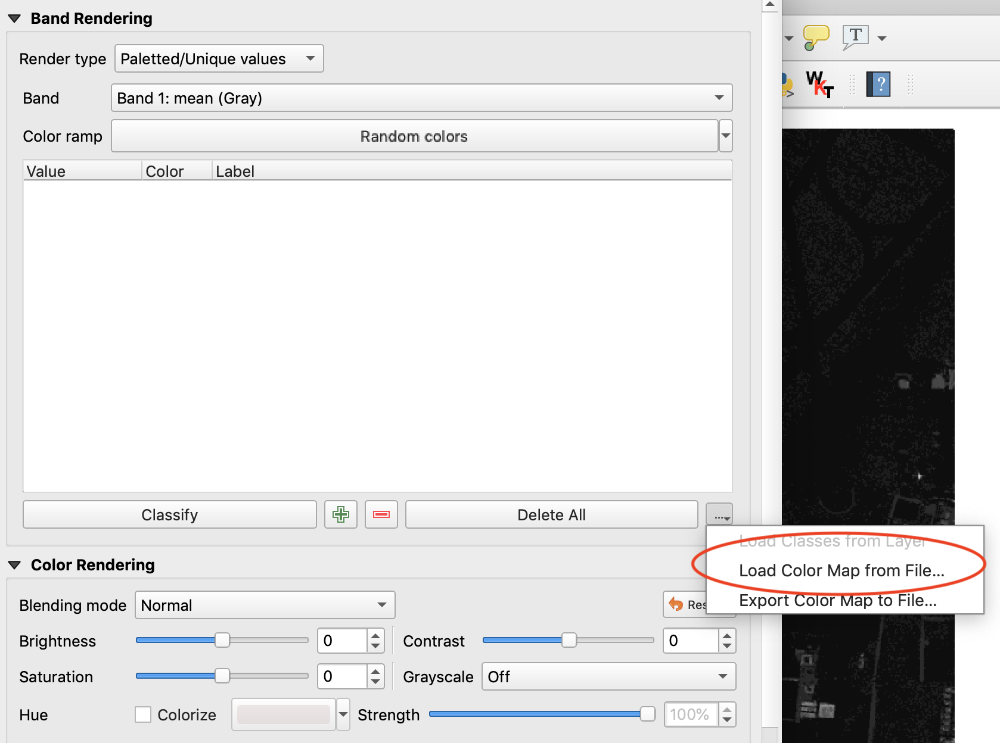
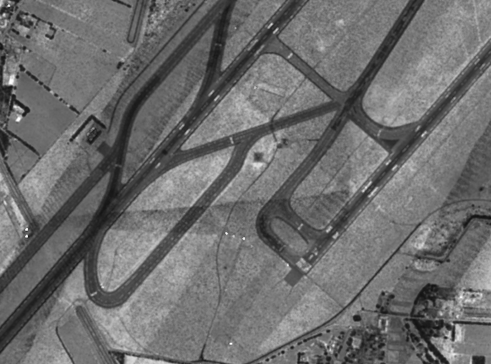

Rasterizing Attributes
This exercise uses PDAL to generate a raster surface using a fully classified point cloud with PDAL’s writers.gdal.
Exercise
Note
The exercise fetches its data from a Entwine service that organizes the point cloud collection for the entire country of Denmark. You can view the data online at http://potree.entwine.io/data/denmark.html
Command
PDAL capability to generate rasterized output is provided by the writers.gdal stage. There is no application to drive this stage, and we must use a pipeline.
Pipeline breakdown
{
"pipeline":[
{
"type":"readers.ept",
"filename":"ept://http://na-c.entwine.io/dk",
"bounds":"([1401016, 1410670], [7476527, 7484590])",
"resolution": 5
},
{
"type":"writers.gdal",
"filename":"denmark-classification.tif",
"dimension":"Classification",
"data_type":"uint16_t",
"output_type":"mean",
"resolution": 5
}
]
}
Note
This pipeline is available in your workshop materials in the
./exercises/analysis/rasterize/classification.json file. Make sure to
edit the filenames to match your paths.
1. Reader
{
"type":"readers.ept",
"filename":"ept://http://na-c.entwine.io/dk",
"bounds":"([1401016, 1410670], [7476527, 7484590])",
"resolution": 5
},
The data is read from a EPT resource that contains the Denmark data. We’re going to download a small patch of data by the Copenhagen airport area that is the limited to a spatial resolution of 5m.
2. writers.gdal
The writers.gdal writer that bins the point cloud data with classification values.
{
"type":"writers.gdal",
"filename":"denmark-classification.tif",
"dimension":"Classification",
"data_type":"uint16_t",
"output_type":"mean",
"resolution": 5
}
Execution
Issue the pipeline operation to execute the interpolation:
$ pdal pipeline ./exercises/analysis/rasterize/classification.json -v 3
(PDAL Debug) Debugging...
(pdal pipeline readers.ept Debug) Root resolution: 3108.53
Query resolution: 5
Actual resolution: 3.03568
Depth end: 11
Query bounds: ([1402800, 1408800], [7478000, 7483000], [-1.797693134862316e+308, 1.797693134862316e+308])
Threads: 15
(pdal pipeline Debug) Executing pipeline in stream mode.
Visualization
{kind=link}
Basic interpolation of data with writers.gdal will output raw classification values into the resulting raster file. We will need to add a color ramp to the data for a satisfactory preview.
Unfortunately, this does not give us a very satisfactory image to view. The reason is there is no color ramp associated with the file, and we’re looking at pixel values with values from 0-31 according to the ASPRS LAS specification.
We want colors that correspond to the classification values a bit more directly. We can use a color ramp to assign explicit values. QGIS allows us to create a text file color ramp that gdaldem can consume to apply colors to the data.
1# QGIS Generated Color Map Export File
22 139 51 38 255 Ground
33 143 201 157 255 Low Veg
44 5 159 43 255 Med Veg
55 47 250 11 255 High Veg
66 209 151 25 255 Building
77 232 41 7 255 Low Point
88 197 0 204 255 reserved
99 26 44 240 255 Water
1010 165 160 173 255 Rail
1111 81 87 81 255 Road
1212 203 210 73 255 Reserved
1313 209 228 214 255 Wire - Guard (Shield)
1414 160 168 231 255 Wire - Conductor (Phase)
1515 220 213 164 255 Transmission Tower
1616 214 211 143 255 Wire-Structure Connector (Insulator)
1717 151 98 203 255 Bridge Deck
1818 236 49 74 255 High Noise
1919 185 103 45 255 Reserved
2021 58 55 9 255 255 Reserved
2122 76 46 58 255 255 Reserved
2223 20 76 38 255 255 Reserved
2326 78 92 32 255 255 Reserved
With this ramp, you can load the color values into QGIS as a color ramp if you change the layer to Palatted/Unique Values, and then load the color ramp file:
{kind=link}
With the ramp, we can also use gdaldem to apply it to a new image:
$ gdaldem color-relief denmark-classification.tif ramp.txt classified-color.png -of PNG
{kind=link}
Intensity
With PDAL’s ability to override pipeline via commands, we can generate a relative intensity image:
$ pdal pipeline ./exercises/analysis/rasterize/classification.json \
--writers.gdal.dimension="Intensity" \
--writers.gdal.data_type="float" \
--writers.gdal.filename="intensity.tif" \
-v 3
(PDAL Debug) Debugging...
(pdal pipeline readers.ept Debug) Root resolution: 3108.53
Query resolution: 5
Actual resolution: 3.03568
Depth end: 11
Query bounds: ([1402800, 1408800], [7478000, 7483000], [-1.797693134862316e+308, 1.797693134862316e+308])
Threads: 15
(pdal pipeline Debug) Executing pipeline in stream mode.
$ gdal_translate intensity.tif intensity.png -of PNG
Input file size is 1201, 1001
Warning 6: PNG driver doesn't support data type Float32. Only eight bit (Byte) and sixteen bit (UInt16) bands supported. Defaulting to Byte
0...10...20...30...40...50...60...70...80...90...100 - done.
> pdal pipeline ./exercises/analysis/rasterize/classification.json ^
--writers.gdal.dimension="Intensity" ^
--writers.gdal.data_type="float" ^
--writers.gdal.filename="intensity.tif" ^
-v 3
(PDAL Debug) Debugging...
(pdal pipeline readers.ept Debug) Root resolution: 3108.53
Query resolution: 5
Actual resolution: 3.03568
Depth end: 11
Query bounds: ([1402800, 1408800], [7478000, 7483000], [-1.797693134862316e+308, 1.797693134862316e+308])
Threads: 15
(pdal pipeline Debug) Executing pipeline in stream mode.
> gdal_translate intensity.tif intensity.png -of PNG
Input file size is 1201, 1001
Warning 6: PNG driver doesn't support data type Float32. Only eight bit (Byte) and sixteen bit (UInt16) bands supported. Defaulting to Byte
0...10...20...30...40...50...60...70...80...90...100 - done.
The same pipeline can be used to generate a preview image of the Intensity channel of the data by overriding pipeline arguments at the command line.
{kind=link}
Notes
writers.gdal can output any dimension PDAL can provide, but it is is up to the user to interpolate the values. For categorical data, neighborhood smoothing might produce undesirable results, for example.
Pipeline contains more information about overrides and organizing complex pipelines.